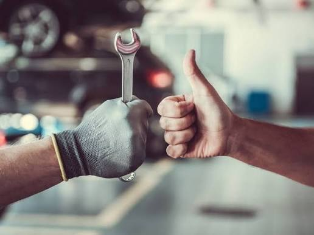
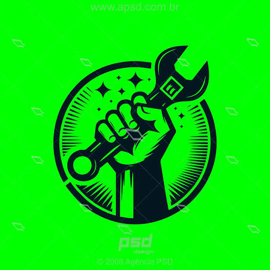
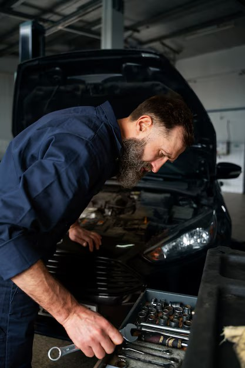

Campanhas
Realizamos campanhas para arrecadar recursos e ajudar pessoas que precisam de serviços mecânicos.

A Mecânica Solidária desenvolve projetos para ajudar a comunidade e incentivar a solidariedade.

Realizamos campanhas para arrecadar recursos e ajudar pessoas que precisam de serviços mecânicos.
As doações ajudam a ONG a manter suas atividades e oferecer apoio à comunidade.

Pessoas interessadas podem participar como voluntárias, contribuindo com seus conhecimentos e seu tempo.